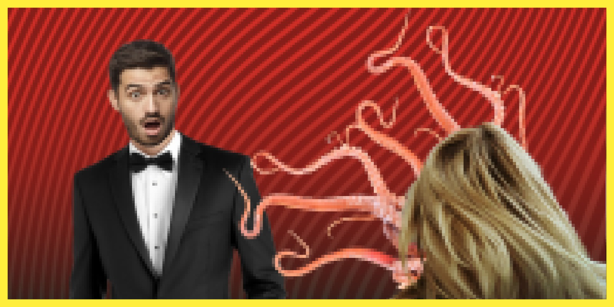

Improvvisamente il tuo date
SI STRAPPA LA FACCIA!!!
Era solo una maschera! In realtà
E' UN CALAMARO!!!
O calamara? Calamaru? Lei, Lui... ma chissenefrega! I calamari non hanno genere! A loro non interessano queste cose! Ad ogni modo ti racconta che
la sua famiglia è stata rapita
dal ristoratore ed è tenuta in ostaggio, pronta ad essere servita ai
cervelli-scimmia
...